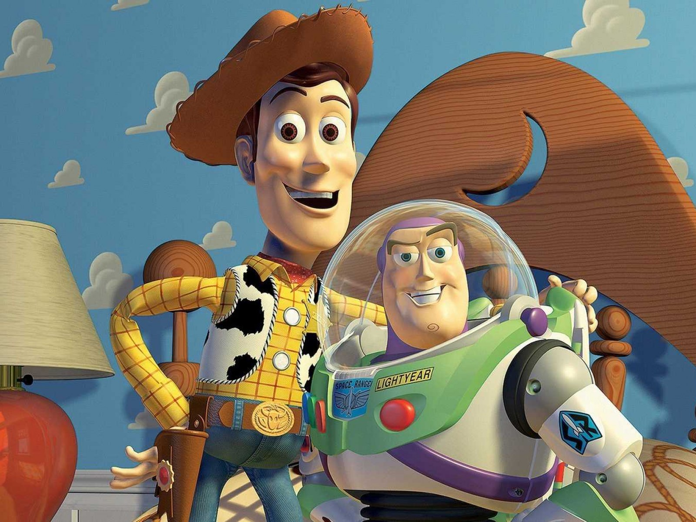

Toy Story es una película de animación generada por computadora de Pixar y Walt Disney Pictures. Se estrenó en los Estados Unidos el 22 de noviembre de 1995.
Es una película de animación de Pixar y Walt Disney Pictures dirigida por John Lasseter, Ash Brannon y Lee Unkrich, y estrenada en Estados Unidos el 24 de Noviembre de 199. Es la secuela de la película de Toy Story (1995).
Toy Story 3 es la tercera película de la saga de animación Toy Story. La película fue distribuida en cines en formato analógico, digital y Disney Digital 3D.
Toy Story 4 es una película estadounidense de comedia animada de 2019, es la cuarta entrega de la saga de animación Toy Story y la secuela de Toy Story 3 (2010). Está producida por Pixar Animation Studios, y fue lanzada por Walt Disney Pictures.
